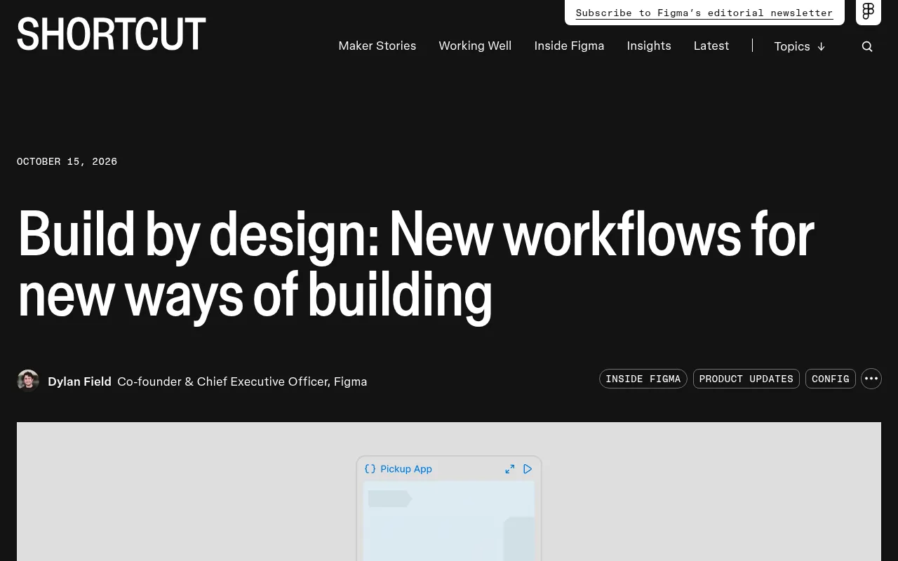
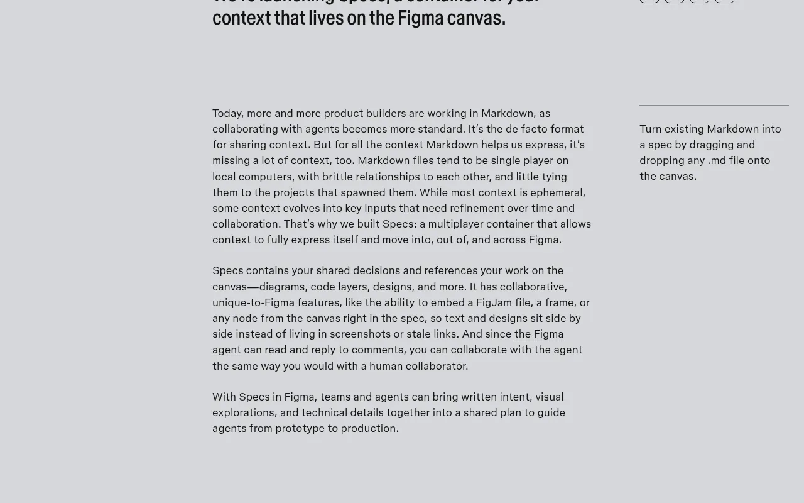
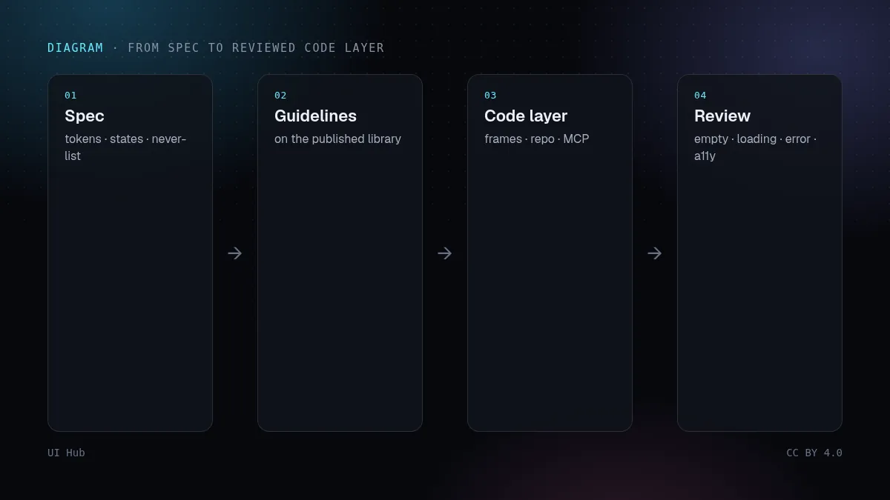

2026 年 10 月 15 日，Figma 在班加罗尔的 Config India 上发布了一组更新。表面看是「又多了几个 AI 功能」，但更有用的读法是一个统一的思路：把代码、文字意图和设计系统规则放到同一张画布上，让人和智能体共用一份上下文，而不是在五个标签页之间来回切。Dylan Field 的汇总文章说得很直白：AI 让写代码变便宜，团队开始「边做边想」，但这种 vibe coding 往往是单人游戏——一位客户的原话是「快、快、快……然后变慢」。

.md 文件拖到画布上）。Spec 可嵌入画框、FigJam 白板和其他画布节点；Figma 智能体能读取并回复评论；GitHub、Hex 等连接器可以把外部上下文拉进来。按 Figma 的说法，把 Spec 链接粘进编码智能体的提示里，Markdown、画框引用、图表、代码图层和 Code Connect 片段都会一起带过去。html_to_figma、generate_image 等工具，并新增 20 个合作集成（OpenCode、Dia、Junie、Meta Muse 等）。
原型回到多人协作。编码智能体做原型，真正的成本从来不是生成，而是评审。一个运行中的演示链接只给出结果，却藏起了备选方案和推理过程。把几个运行版本并排放在画布上、评论钉在旁边，就恢复了设计团队熟悉的评审循环。分支 + PR 的出口同样关键：原型有了进入代码仓库的路径，而不是推倒重写。
Markdown 终于有了地址。和智能体协作的团队，PRD、AGENTS.md、提示词笔记大多已经是 Markdown，却散落在各自电脑和仓库里，和它们描述的界面毫无关联。Specs 押注的是：需求应该挨着画框、人和智能体都能编辑、并能用一个 URL 交给编码智能体。不管你用不用 Specs，这个模式是对的——一份权威需求，与作品一起版本化。
设计系统变得「智能体可读」。Guidelines 和 Code sources 是这次发布里最不起眼、却影响最大的部分。一个自带该做/不该做规则、并指向真实 npm 包的组件库，会把「请符合我们的设计系统」从一句愿望变成智能体每次都会收到的输入。
AI 辅助界面里最稀缺的输入，仍然是约束文件。这个月的每个工具——从 Claude Design 的设计系统到 Figma 智能体的规范文件——都收敛到同一个结论：生成能力过剩，质量来自关于 Token、状态和「绝不做什么」的简短明确规则。Figma 现在给这些规则提供了原生的存放位置和自动送达智能体的通道。已经写好精炼规范文件的团队会立刻受益；跳过这一步的团队，只会得到更快、看起来很像品牌的噪声。
两点提醒。第一，这些都是分批灰度的测试版，队友之间可能先后看到功能。第二，成本：代码图层消耗 AI 积分，付费套餐里创建和编辑仅在 2026 年 11 月 4 日前免费；Guidelines 会增加上下文，也可能让单次提示更贵。Figma 公布的客户数据（如 Merkle 称迭代快 30%）是厂商发布的案例快照，不是独立基准测试。
# Spec: 结账 v2
## Token
只用 surface / text-muted / accent；圆角 10；Geist 14/20
## 必须存在的状态
空购物车 · 加载中 · 卡被拒 · 成功 · 超长名称
## 内容
真实价格、真实报错文案；句首大写
## 禁止
文字渐变 · emoji 图标 · 只有占位符没有标签 · 裸 hex 色值
## 完成标准
390 + 1440 · 亮色 + 暗色 · 焦点可见 · AA 对比度
如果你要从零写这份规范文件或 Spec，可以从 UI Hub 已收集的设计技能和智能体指南起步：在资源列表里按 skills 筛选 SKILL.md 风格的规则文件，再看 Agent 指南 里「搜索、挑选、验证」的循环，它和接入 MCP 的编码智能体很搭。不管用哪张画布，道理都一样：先把规则交给智能体，再让它出像素。